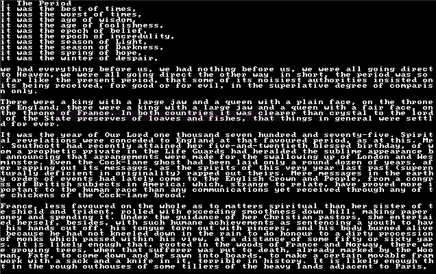
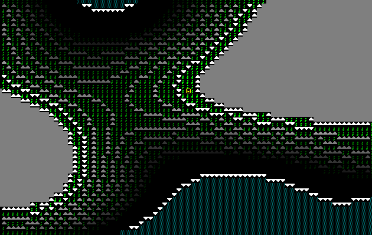
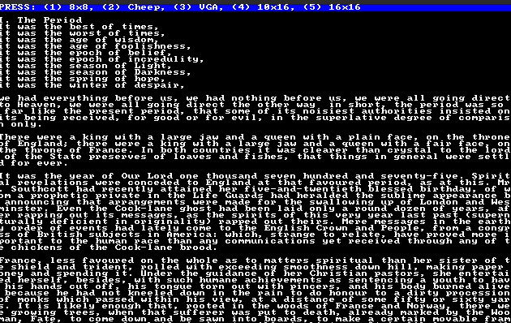
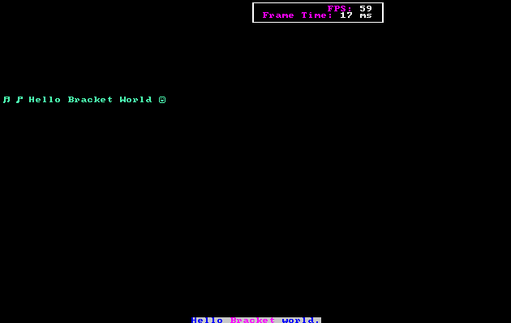
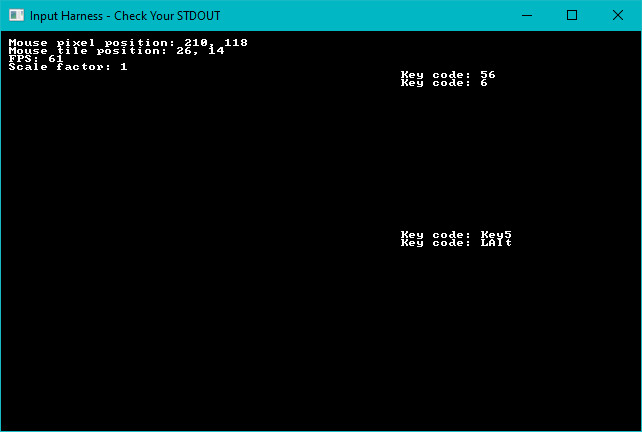
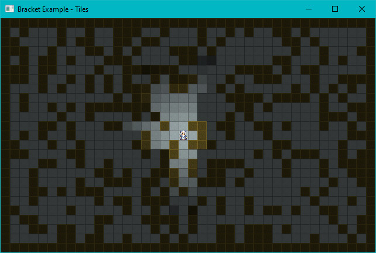
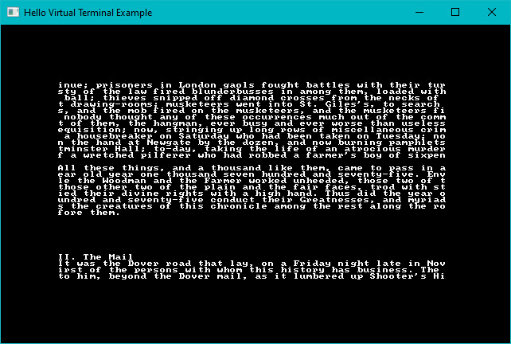

Terminal Examples
alpha
Demonstrates the RGBA capabilities of the library, when alpha blending is enabled on a sparse console overlaying a simple console. Also uses the VirtualConsole feature to create a large psuedo-console containing a chunk of A Tale of Two Cities, and rendering that as the base layer.

astar_mouse
Generates a random blob map, and places a player on it. The player moves to wherever the mouse is clicked, using A star pathfinding. Also generates real-time field of view for the player as they zip around.

bench_scalable
Generates a completely random console, as fast as possible. Uses the resizable console option to allow the window to be resized while it runs, and queries the console for dimensions---filling as much of it as possible.
No screenshot, sorry.
benchmark
Draws a random console as fast as possible. No resizing.
colorfont
Demonstrates that you can use color in your font graphic if you want to.

dwarfmap
An homage to Dwarf Fortress. Generates a 3D map, and then renders it top-down with darkening for lower than the player z-levels. Implements a-star pathing in 3D, and mouse-based navigation.

flexible
Demonstrates using a fancy/flexible console to make a spinning @ bounce around the screen.

fontswitch
Demonstrates switching fonts at run-time.

hello_minimal
Minimal hello world, see the quick start guide.
hello_terminal
See the quick start guide---a bouncing hello world.

input_harness
A handy tool to display the key code and mouse information about keys/mouse as they are utilized. Also demonstrates the advanced_input system, providing inputs as a stream of events rather than a simple set.

keyboard
Mostly a debugging tool. Demonstrates keys and their various modifier combiantions.
native_gl
Demonstrates how to access the underlying OpenGL system, if you should need it. Note that if you really want to write a GL application, this is a really inefficient way to do it---but it gets you started, and offers a way to perform quick OpenGL calls if you just need something fancy.

no_cls
Mostly a debugging tool, this example shows that consoles accumulate data if you don't call cls. This was important for debugging the native console implementations and their dirty-render detection.
post_process
Demonstrates reading a REX Paint file (.xp), and rendering it to the screen. Enables or disables the terminal's post-processing options, screen-burn and uses scan-lines.

return_error
Demonstrates how to return and act on errors from initialization, should you wish to do so.
rex
Loads Nyan Cat from an embedded REX Paint file, and renders it to the screen.

sparse
Demonstrates layering a sparse console on top of a simple console, with different fonts on each.

sparse_cls
Debugging tool, designed to help me notice when I break clearing sparse consoles again!
sprites
Uses the sprite layer type (in its infancy) to animate some sprites as they run around the screen.

squishy
A benchmark tool that also demonstrates the ability to "squish" terminals by dynamically resizing the size of each tile.
textblock
Demonstrates the text-block tool, and how it can help with large amounts of text.

textsprites
Demonstrates the "multi-tile text sprite" system. You can batch some characters together for quick rendering.

tiles
Uses graphical fonts instead of ASCII/CP437 for a visual dungeon experience.

unicode
Demonstrates that if you really want to (it's slow!), you can load a giant font containing lots of unicode and display multi-lingual terminals. Run this one in release mode. It takes far too long to start, otherwise.

virtual_console
Demonstrates using a virtual console to hold a lot of data, and then displaying windows into the virtual console. This can be handy for logs, manuals and similar. This should have a seizure warning

walking
Demonstrates walking around a map.
walking_with_is_pressed
The same walking demo, but using the is_pressed function (for advanced input) rather than the simple key enum.